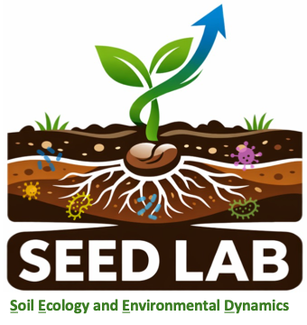

Soil Ecology and Environmental Dynamics Lab
at the University of Hong Kong
Wei KE (PhD student from 2026)
Education: Bachelor's degree (Tsinghua University); Master's degree (The University of Hong Kong)
First-author publications before joining the lab: 1. Higher nitrification and lower consumption drive higher N2O effluxes in estuarine than non-estuarine mangrove wetlands. Environmental Research Letters.
Research Interest: Stable Isotope Ecology; Soil Carbon Cycle; Greenhouse Gas Emissions
Email: kewei@connect.hku.hk